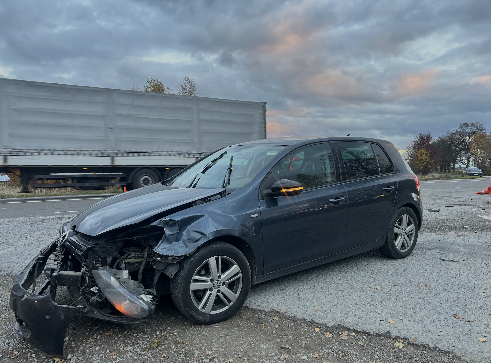
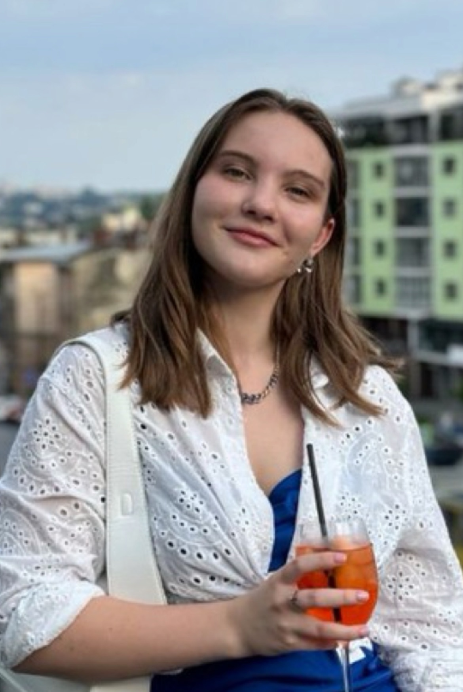
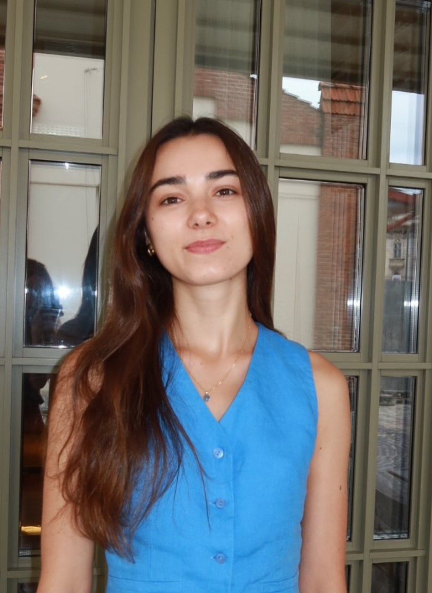
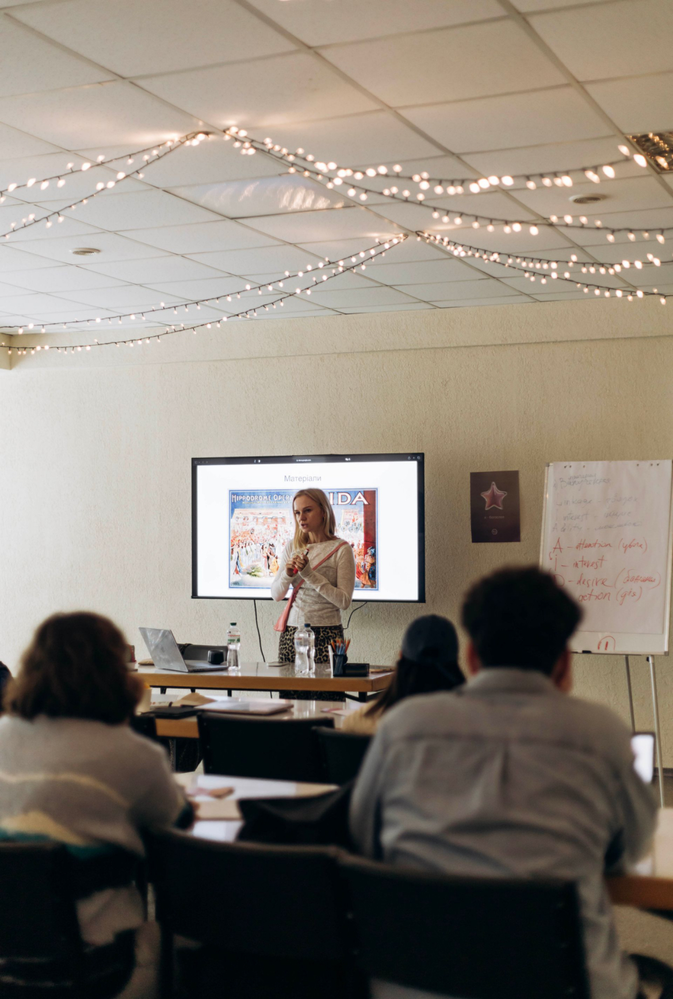

Що за поворотом
Я впевнена, Бог не моргає.
І навіть тоді, коли усе летить шкереберть і земля з під ніг - Він точно знає всі фізичні порухи, як і порухи душі.

Минулої неділі я потрапила в прикру автопригоду.
Я врешті мала перші повноцінні вихідні, яких тааак чекала, бо всі попередні вихідні були зайняті служінням та навчанням. І ми з подругою вирішили на 1 день поїхати в гори - це трошки більше 2х годин автівкою від Львова. Вже повертаючись назад, ми робили поворот ліворуч на трасі і з нами зіштовхнулась жінка, яка їхала на високій швидкості.
ЇЇ авто закрутилась від поштовху і його знесло на обочину, де стояв чоловік.
В середу чоловік помер у лікарні від численних травм.
Мені важко описувати ці події, але вони постійно в голові, в уривчастих снах, у спробах уявити, а як би було, якби… Але я не можу повернути час назад. Не можу змінити жодного свого руху. Не можу вплинути на те, як рухалась ця жінка. І тепер сім’я втратила чоловіка і тата. Моє серце розривається, як же тоді їхні?
А ще я дуже боюсь. Боюсь, що так як це - кримінальна справа, і в Україні за подібне можна отримати від 3 до 8 років ув’язнення. І хоч саме дії жінки привели до даного інциденту (вона очевидно порушила кілька правил дорожнього руху, поліцейські, адвокат та слідчий кажуть, що вина саме її). Але на жаль, все ще є місце корупційним схемам. Тому я чекаю наступних кроків - слідчого експерименту та експертизи. Саме після них висунуть обвинувачення. Або лише їй, або нам обом. Далі будуть суди.


Та попри весь мій внутрішній жах, сльози, сум і часом розпач, Бог продовжує мені життя і дає гарні розмови. З Ним та іншими. Наприклад, я ділилась зі своєю одногрупницею, Нікою (фото ліворуч), про цю ситуацію. Я попросила її помолитись, якби вона змогла (Ніка деїстка). вона відповіла: “З усього, що можна було, ти попросила мене найскладніше. Але я спробую”.
З Соломією (на фото праворуч) ми мали кілька гарних розмов про цю ситуацію. Соломія не могла зрозуміти, “чому Бог дає важке тим, хто цього не заслуговує”. І я могла ділитись з нею про те, який Бог милостивий і довготерпеливий до усіх нас. Ми говорили про гріх та його наслідки, про силу любові, про Бога, якому точно не байдуже.
Моліться, будь ласка, про цих та інших студентів, з якими маю шанс мати дотик. І про те, щоб Бог скеровував мене у тому, як показувати Його красу у різних ситуаціях.

Я продовжую навчання та служіння, мала багато чудових зустрічей протягом цього місяця. Я трошки частіше про то пощу на свою Facebook сторінку, то деталі можете бачити там.
А тут просто хочу подякувати, що можу просити тебе молитись про різне і знати, що тобі не байдуже до цього служіння і мене. Це особливе пережиття відблиску Божого царства тут на землі для мене.